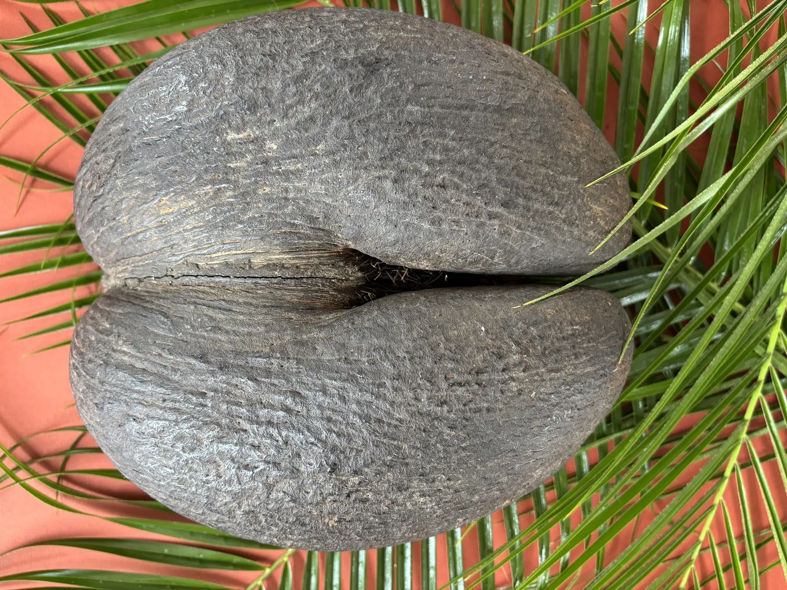
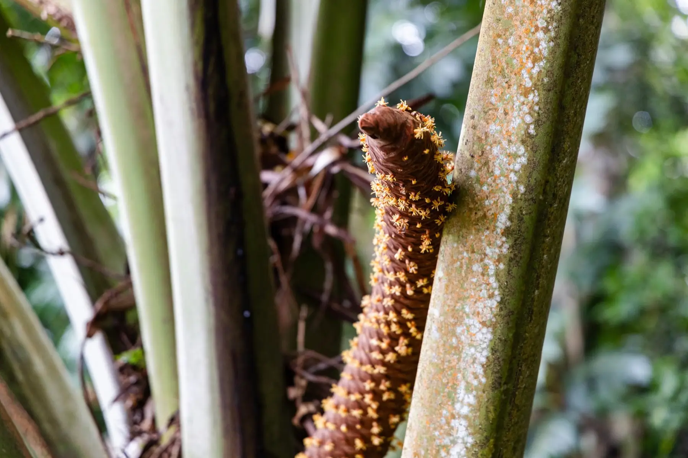
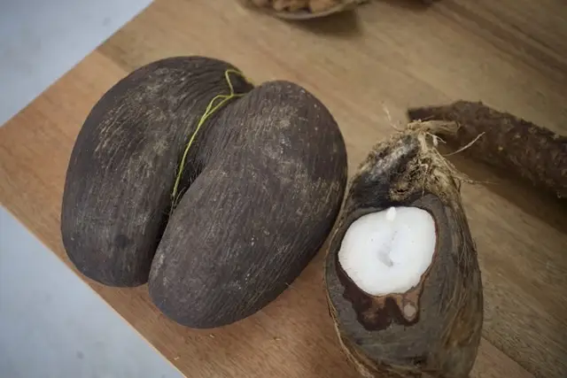
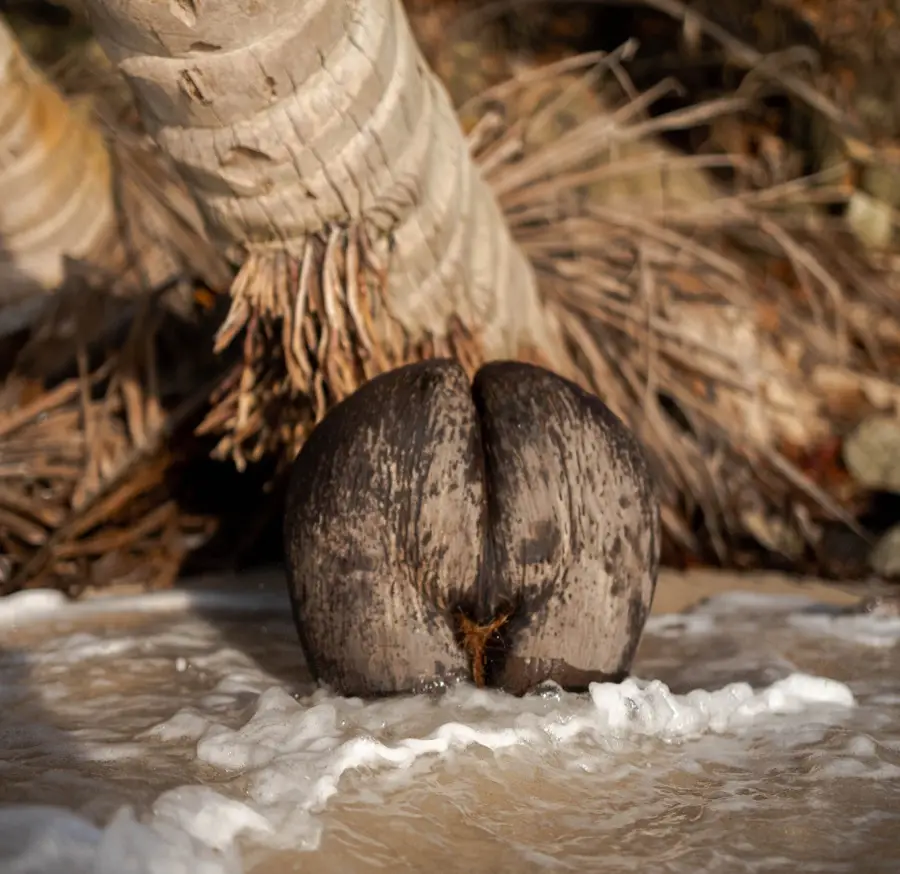
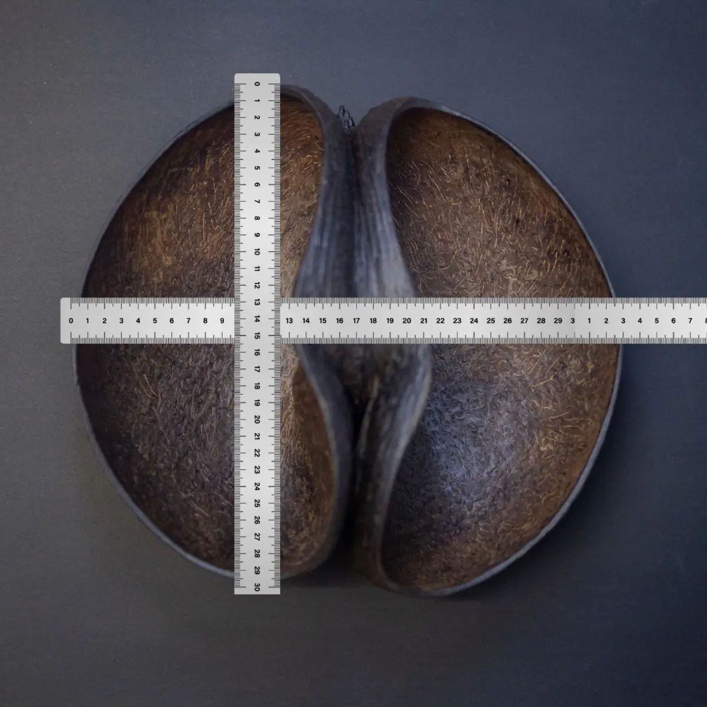
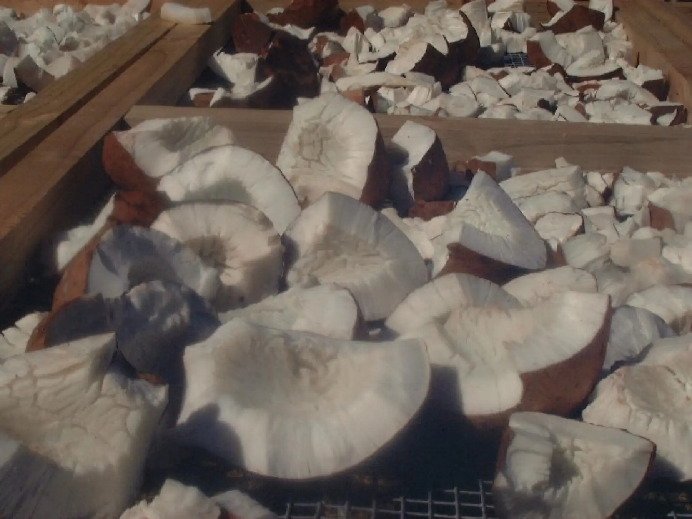

Thelegendof thedouble nut
Our island journal. Stories, facts and buying guides about the Coco de Mer, written from the home of the nut in Seychelles.
Read the story
Latest story


May 29, 2025 · 4 min read
The Rare Treasure of the Coco de Mer: why this rare nut is worth the investment
Found only in Seychelles, every nut is one of a kind, certified and impossible to replace. Here's what makes it a piece worth owning.
Read the storyFun & Crazy Facts About the Coco de Mer of the Seychelles
Why the Coco de Mer of the Seychelles Is So Expensive
Extracting the Soul of the Coco de Mer

The Legend of the Coco de Mer
The Importance of Proper Documentation When Importing Coco de Mer

Is the Coco de Mer Eatable?

Coco de Mer: the Enigmatic Palm and Its Royal Admirers
Tips for Buying the Coco de Mer
A Once-in-a-Lifetime Experience You Can't Miss
Exploring the Botanical Wonders of the Coco de Mer
The Puzzling Truth About the Coco de Mer
Really? It's Made From That! Interesting Coco de Mer Facts

From Traditional Tools to Timeless Artistry
The Coco de Mer: A Botanical Marvel
What to Do on a Rainy Day in Seychelles
How Do I Choose? This Will Help

Your Fragrance Guide, Part 1